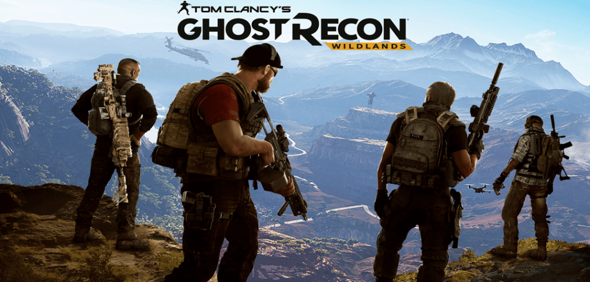

Wildlands
A história de "Ghost Recon Wildlands" se passa em uma versão fictícia da Bolívia, onde um poderoso cartel de drogas conhecido como Santa Blanca assumiu o controle do país. O cartel é liderado pelo carismático e brutal El Sueño, que busca transformar a Bolívia em um estado narcotraficante dominado pelo terror.
Os jogadores assumem o papel de um Ghost, um membro de uma unidade de elite das Forças Especiais dos Estados Unidos, enviada para desmantelar o cartel de Santa Blanca. A missão dos Ghosts é eliminar os líderes do cartel, interromper sua produção de drogas e desestabilizar suas operações em todo o país.
O jogo permite que os jogadores explorem um vasto mundo aberto, completo com uma variedade de biomas, desde montanhas nevadas até selvas densas e desertos áridos. Os jogadores podem completar missões principais e secundárias de várias maneiras, utilizando táticas furtivas, ação direta ou uma combinação de ambas.
Breakpoint
O jogo é ambientado em um mundo aberto chamado Auroa, uma ilha fictícia no Oceano Pacífico. O jogador assume o papel do Tenente-Coronel Anthony "Nomad" Perryman,[a] um Agente das Forças Especiais enviado à ilha para investigar uma série de distúrbios envolvendo a Skell Technology, uma Empresa militar privada em Auroa.
Rainbow Six Siege
Rumble exibe John Clark, um ex-agente da CIA que agora comanda uma unidade antiterrorista internacional, formada pelos melhores soldados de todo o globo, sendo assim, a SWAT está em um nível abaixo desta equipe, pois os soldados são treinados na base da melhor força de combate antiterrorista do mundo, da SAS, além de contar com o melhor serviço de informação disponível, do Mossad, e toda a tecnologia logística dos EUA. Por Rainbow Six ser uma força-tarefa internacional, pode atuar numa escala global se houver a necessidade. Ela é ativada em casos de extremo risco, terrorismo e caos, onde as forças convencionais e até mesmo a elite não conseguem dar conta.[1]

future soldier
Num futuro próximo, quatro super soldados de elite serão os pontas-de-lança numa guerra oculta em torno do globo. À medida que os Ghosts atingem os seus objectivos, descobrem uma ameaça maior; uma ameaça capaz de desequilibrar para sempre a balança do poder.

Quem foi clancy
Thomas Leo Clancy Jr. foi um escritor e historiador norte-americano, conhecido por seus enredos detalhados de espionagem e de ciência militar que ocorrem durante e depois da Guerra Fria.O que resultou na saga de jogos e na serie